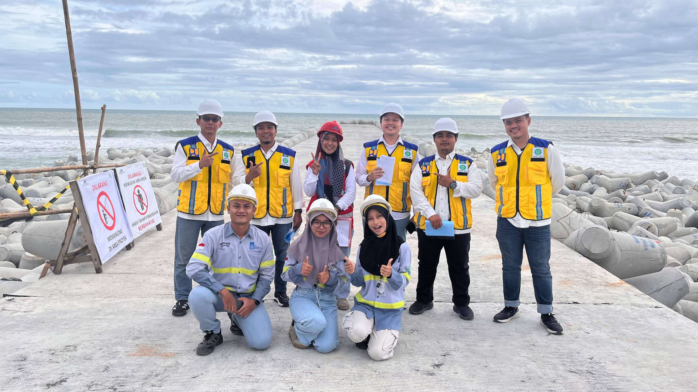
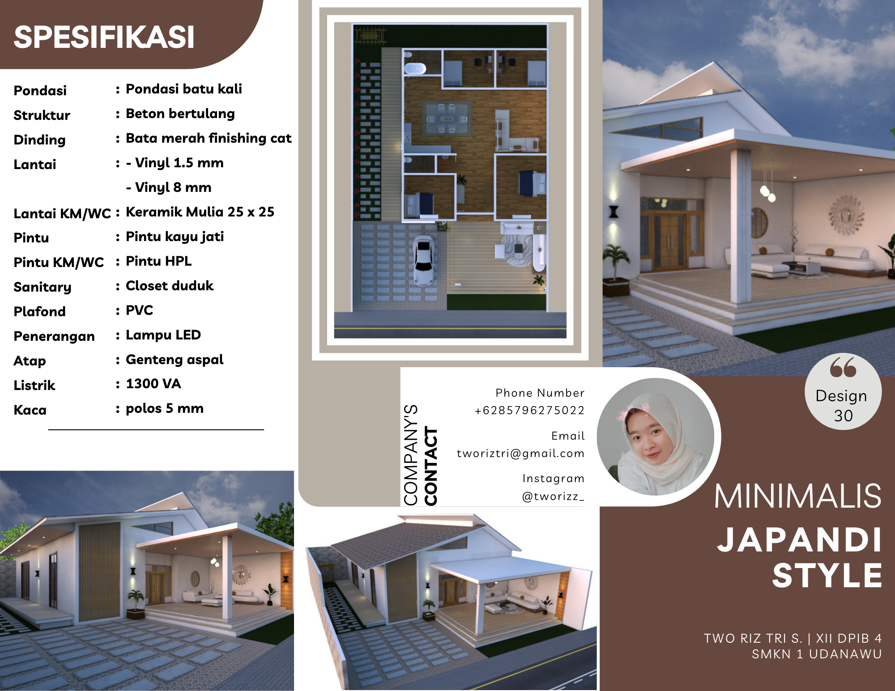

Profil
Pendidikan
Institut Teknologi Sepuluh Nopember
D4 Teknologi Rekayasa Konstruksi Bangunan Air
SMK Negeri 1 Udanawu
Desain Pemodelan dan Informasi Bangunan
Keahlian & Karakter
Saya memiliki komitmen tinggi terhadap kualitas kerja dan ketepatan waktu. Teruji melalui penyelesaian tugas-tugas kompleks di bidang Teknik Sipil. Saya aktif mengembangkan kemampuan teknis serta manajemen waktu dalam lingkungan kerja yang dinamis.
Pengalaman Proyek & Magang
CV. PILAR MAS (Kontraktor)
Magang Industri
Peran: Drafter, Estimator, dan Pengawas
- Membuat gambar kerja bangunan (2D AutoCAD) dan desain eksterior/interior (3D Sketchup).
- Menghitung Rencana Anggaran Biaya (RAB).
- Monitoring progres lapangan dan mengecek kesesuaian gambar dengan kondisi lapangan.
Pemprov Jatim-Project Dosen
Survey Investigasi Desain Wilayah Madura
Peran: Penyusun Laporan
- Menyusun laporan hasil perencanaan desain
BBWS SERAYO OPAK – PU SDA
Magang pada Proyek Pembangunan Pengaman Pantai Congot, DIY
Peran:Observasi Lapangan, Managemen K3, Quality Control, dan Administrasi
- Melakukan inspeksi alat berat serta memonitoring penerapan K3 dan manajemen lalu lintas di area proyek.
- Mengawasi progres harian (opname pekerjaan), memonitoring ketersediaan material, serta menguji mutu material di lapangan.
- Mengelola dokumentasi administrasi proyek, pendataan produksi dan pemasangan material, pengarsipan dokumen, dan menyusun dokumen termin.
Organisasi & Prestasi
Juara 1 Essay National Competition ICEF IPB
Berhasil meraih peringkat pertama dalam kompetisi karya tulis ilmiah tingkat nasional yang diselenggarakan oleh IPB University.
KEPALA DIVISI EXTERN HMDS – Relation
Bertanggung jawab atas proker dan agenda dan koordinator staff.
Staff Ahli BCC College D’village 13th - Kestari
Menyiapkan berkas keperluan event terkait Bridge College Competition.
Staff Tender Cup D’village 12th - Kestari
Menyiapkan berkas keperluan event terkait Tender Cup Competition.
Galeri Portofolio

